Locații de nuntă în județul Prahova
- locații în director
- 67
- cu cazare în registrul SITUR
- 18
- medie ponderată Google
- 4,4 / 5
- evaluări Google
- 70.444
Cum alegi unde mergi la vizionare
O nuntă între vii, ca la Casa Timiș, și o ceremonie în zona de munte presupun decizii diferite. Gândiți traseul invitaților din locul în care se cazează, apoi alegeți vizionări în aceeași direcție. Pentru o terasă, întrebați separat ce capacitate rămâne după montarea ringului.
Pentru o vizită la Casa Timiș, reperul este Chițorani, în timp ce alte adrese sunt în zona Bușteni. Mai întâi stabiliți dacă preferați o zi petrecută printre vii sau o ceremonie pe fundal de munte. Dacă programul are o singură după-amiază de vizionări, calculați distanța pe șosea între cele două adrese alese și lăsați timp să vedeți exteriorul înainte de apus.
Două adrese pentru o zi de vizionări
Pe hartă, între aceste două proprietăți sunt 4,0 km în linie dreaptă. Deschide indicațiile de drum din fișe ca să vezi traseul pe șosea înainte de a stabili a doua întâlnire.
- Crama Domeniile Edivine · Str. Principala,nr.578,Ungureni, 107244 Prahova
- Oenoterra Dealu Mare · DJ100H, 107300 Gura Vadului
Spații exterioare menționate de operatori
- Casa Timis · Nuntă între vii
- KUIB Restaurant · Ceremonie în aer liber
- Zaivan Retreat · Petrecere intimă în grădină
Explorează după localitate
- Azuga o locație
- Bărcănești o locație
- Boldești-Scăeni 2 locații
- Breaza de Jos o locație
- Brebu Mânăstirei o locație
- Bușteni 18 locații
- Ceptura de Jos 2 locații
- Cheia o locație
- Chițorani 2 locații
- Comarnic o locație
- Comuna Bucov o locație
- Comuna Valea Doftanei o locație
- Cornu de Jos o locație
- Gâlmeia o locație
- Gura Vadului 3 locații
- Izvoarele o locație
- Orzoaia de Sus o locație
- Ploiești 2 locații
- Plopeni o locație
- Poiana Câmpina o locație
- Poiana Țapului o locație
- Secăria o locație
- Sinaia 8 locații
- Slănic 2 locații
- Ungureni o locație
- Urlați 3 locații
- Vadu Săpat o locație
- Vâlcănești o locație
- Valea Bobului o locație
- Valea Urloii o locație
- Vălenii de Munte o locație
- Vărbila o locație
Toate locațiile din județul Prahova
Ordinea ține cont de nota Google și de numărul evaluărilor. Cum calculăm ordinea
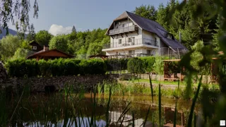
Fotografie a locației · Sursa fotografiei Cheia · Pensiune
Pensiunea IDEAL - Cheia Prahova
Un grup cazat la Cheia amintește două camere folosite de familii de mărimi diferite și o curte în care le-a plăcut să se odihnească.
Cheia nr 343, 107356 Cheia+40 770 343 745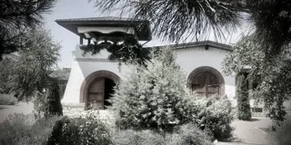
Fotografie a locației · Sursa fotografiei Zona Gura Vadului · Cramă
Crama Mierla Albă
Cramă artizanală pe DJ102R, în Prahova, cu nota 5 din 104 evaluări și degustări ghidate de gazdă. Bună pentru un grup mic de invitați.
DJ102R+40 744 273 882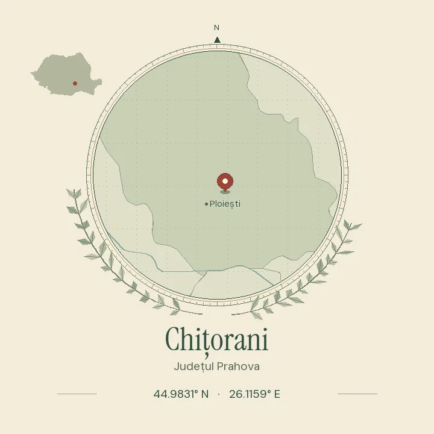
Hartă ilustrată Chițorani · Cramă
Crama Strămutată
Cramă mică între vii la Chițorani, cu nota 5 din 97 de evaluări. O aniversare cu meniu ales din timp arată cum lucrează gazda.
Str. Clody Bertola, 107111 Chițorani+40 744 319 148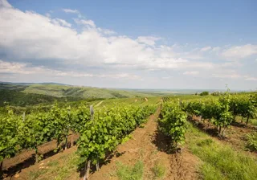
Fotografie a locației · Sursa fotografiei Ceptura de Jos · Cramă
Crama SERVE Ceptura
Crama SERVE Ceptura, Ceptura de Jos. Turul de la SERVE a început, pentru un vizitator, cu o rezervare în avans.
CRAMA SERVE, 107125 Ceptura de Jos+40 726 126 531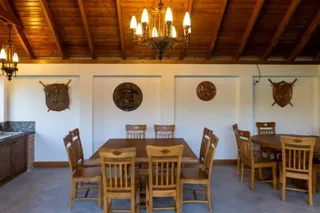
Fotografie a locației · Sursa fotografiei Cornu de Jos · Pensiune
Pensiunea Conacul Cornu 1945
La Conacul Cornu 1945, oaspetele care descrie curtea amintește leagăne, șezlonguri la umbră, o bucătărie de vară cu grătar și un iaz.
Strada Carol I 267, 107175 Cornu de Jos+40 750 467 767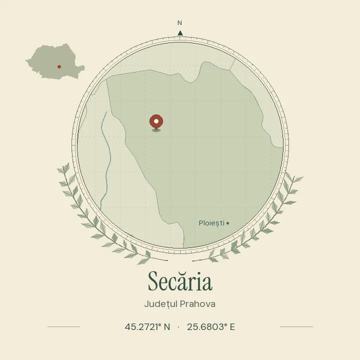
Hartă ilustrată Secăria · Cazare la gazdă
Conacul Secăria
La Conacul Secăria există experiența unei tabere cu copii în care grupul a putut folosi atât exteriorul, cât și interiorul.
Str. Plaiul Cucului nr 5, 107530 Secăria+40 746 052 888
Fotografie a locației · Sursa fotografiei Bușteni · Hotel
Moon Resort
Moon Resort, Bușteni. Un oaspete care a rezervat un Chalet pentru un weekend descrie o terasă proprie și o curte mică, cu grătar.
Strada Căprioarei 27, 105500 Bușteni+40 747 133 460
Fotografie a locației · Sursa fotografiei Bușteni · Vilă
Vila Doi Ponei - Cazare Busteni
Vila Doi Ponei - Cazare Busteni, Bușteni. Un adult care i-a însoțit spune că la masă au avut legume proaspete din ferma gazdelor.
Strada Crinei 9, 105550 Bușteni+40 746 024 301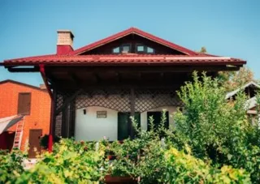
Fotografie a locației · Sursa fotografiei Vâlcănești · Cramă
Crama Ferdi
Cramă din Vâlcănești, Prahova, cu 4,9 din 51 de evaluări și vinuri lăudate de clienți fideli. Nu are date despre evenimente; ce să întrebi.
DJ218 709, 107166 Vâlcănești+40 729 884 940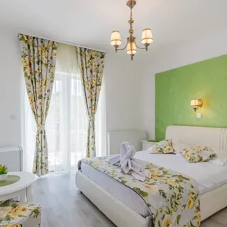
Fotografie a locației · Sursa fotografiei Slănic · Pensiune
Pensiunile Căsuța cu Trandafiri 1 si 2
Pensiunile Căsuța cu Trandafiri 1 si 2. Un grup a închiriat integral Vila 2 de la Căsuța cu Trandafiri pentru minivacanța de la începutul lui decembrie.
CT 1 - Strada Victoriei, Calea Ploiești 8, 16 CT2, 106200 Slănic+40 744 349 956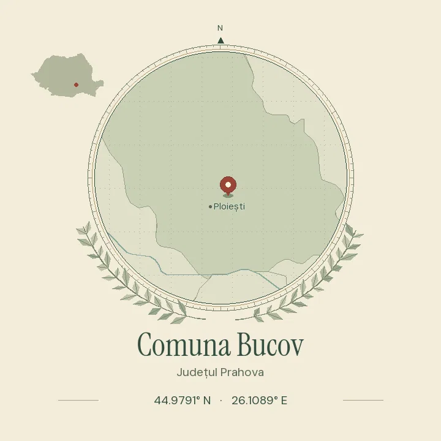
Hartă ilustrată Comuna Bucov · Cramă
Domeniile Valea Călugărească
Producător de vin din Chițorani, comuna Bucov, cu nota 4,9. Fără date despre spații de evenimente; util pentru degustări sau vinul nunții.
Sat. Chitorani, Str. Iuliu Maniu nr. 165, 107112 Comuna Bucov+40 732 128 226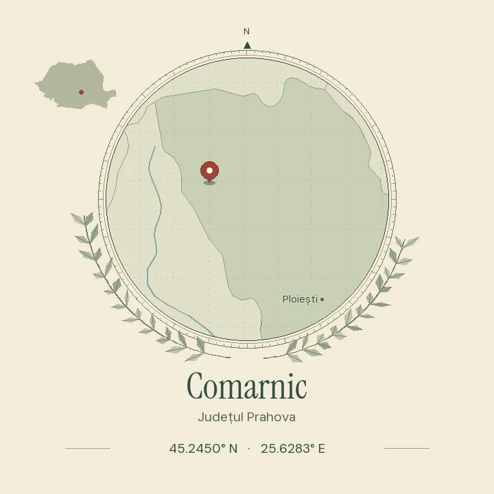
Hartă ilustrată Comarnic · Cazare în regim hotelier
Pensiunea Valea Prahovei Comarnic
Un participant la o întâlnire de familie în Comarnic descrie două locuri de joacă, unul în casă și unul în curte, precum și terasa folosită vara.
Strada Ghioșești nr 1, 105700 Comarnic+40 726 330 895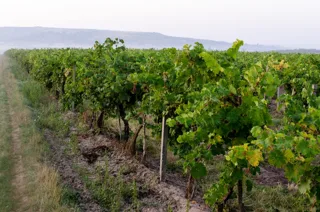
Fotografie a locației · Sursa fotografiei Gâlmeia · Cramă
Crama Diac
Cramă în Gâlmeia, Prahova, cunoscută pentru vinul pelin după rețeta casei; 4,8 din 125 de evaluări. Furnizor de vin, nu sală de evenimente.
Str. Cramei No. 7 107406, 107406 Gâlmeia+40 722 642 306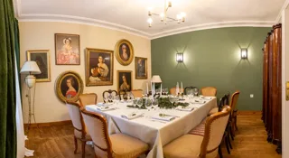
Fotografie a locației · Sursa fotografiei Breaza de Jos · Pensiune
Zaivan Retreat
Bucătăria profesională și posibilitatea de a invita un bucătar sunt două detalii remarcate de un oaspete la Zaivan Retreat.
Strada Națiunii 9, 105400 Breaza de Jos+40 31 229 6057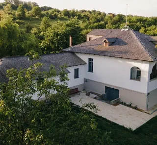
Fotografie a locației · Sursa fotografiei Orzoaia de Sus · Centru de evenimente
Conacul Nucu
Conac restaurat în Orzoaia de Sus, cu vedere la vii, concerte în curte și tabere. Site-ul pomenește nunți; ce să întrebi gazdelor.
Strada Orzoaia de Jos 30, 106300 Orzoaia de Sus+40 746 110 033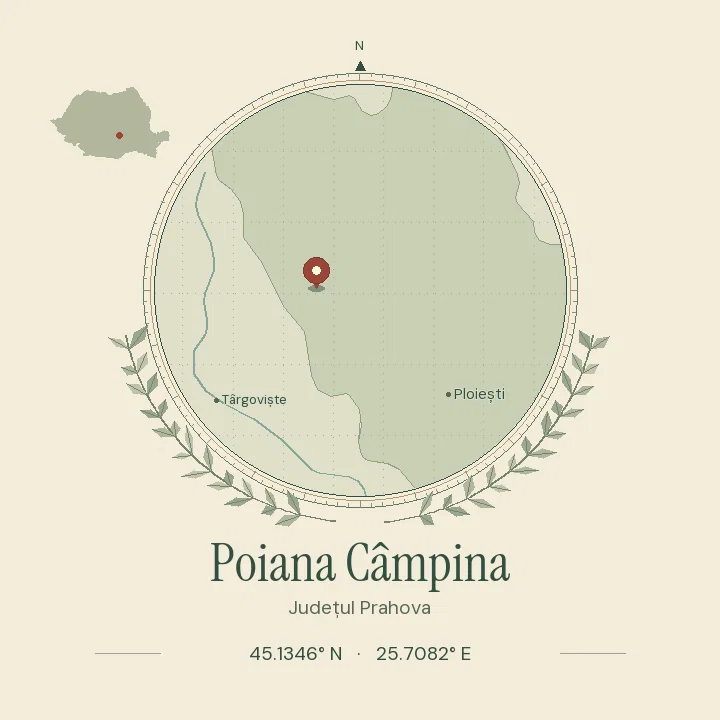
Hartă ilustrată Poiana Câmpina · Hotel
Maison 7 Poiana Domnitorilor
Maison 7 Poiana Domnitorilor, Prahova. La ieșire, parcurge scara și aleea așa cum ar face-o mirii în ținută de ceremonie.
Aleea Domnitorilor, No 26, Poiana Campina, 107425 Prahova+40 723 618 889
Fotografie a locației · Sursa fotografiei Bușteni · Vilă
Forest Retreat Luxury Villas
Forest Retreat Luxury Villas. La Forest Retreat, Vila IRIS apare într-un scenariu bine delimitat: cununie în grădină, apoi cină și petrecere în vilă.
Strada Primăverii 12, 105500 Bușteni+40 728 866 992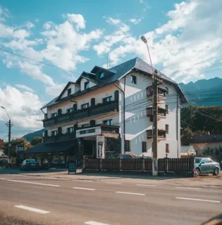
Fotografie a locației · Sursa fotografiei Bușteni · Hotel
Suru Hotel
Suru Hotel. Pentru rudele care rămân peste noapte la Bușteni, oaspetele care descrie camerele de la Suru remarcă și varietatea micului dejun.
Bulevardul Independenței 33, 105500 Bușteni+40 743 214 084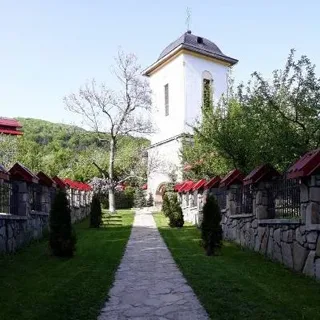
Fotografie a locației · Sursa fotografiei Slănic · Bed & Breakfast
Vila Portas
O familie cazată la Vila Portas povestește că a putut continua grătarul în timpul unei ploi ușoare, datorită acoperișului.
Strada Dorobanților 13, 106200 Slănic+40 755 426 201Fotografie a locației · Sursa fotografiei Boldești-Scăeni · Sală de nunți
Events Garden by Nabucco
Sală de nunți din Boldești-Scăeni cu trei saloane (Grace, Harmony, Euphoria), ceremonie în grădină și nota 4,7 din 290 de evaluări.
Strada Gloriei 29, 105300 Boldești-Scăeni+40 744 584 584Fotografie a locației · Sursa fotografiei Gura Vadului · Cramă
Crama Budureasca
Cramă pe Drumul Vinului din Gura Vadului, cu pivniță de butoaie, degustări și mese în vie; media 4,7 din 287 de evaluări.
Drumul Vinului nr 4, 107300 Gura Vadului+40 732 200 130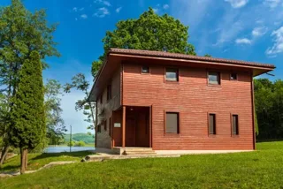
Fotografie a locației · Sursa fotografiei Vărbila · Hotel
Lac Sub Soare
Lac Sub Soare, Prahova. Acestea oferă puncte diferite de privire asupra lacului, dar fiecare are propriile limite de acces.
sat Varbila, Com Iordacheanu, nr 351A, 107316 Prahova+40 723 658 631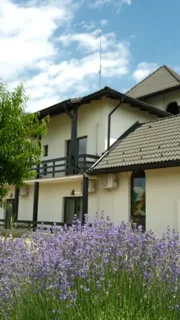
Fotografie a locației · Sursa fotografiei Ceptura de Jos · Hotel
Vinalia Conacul din Ceptura
Vinalia Conacul din Ceptura, Ceptura de Jos. Spune și că șezlongurile i s-au părut puține în raport cu numărul oaspeților cazați.
Strada Principala 719A Vinalia, Conacul din, 107126 Ceptura de Jos+40 722 560 931
Fotografie a locației · Sursa fotografiei Bușteni · Restaurant
Complex Cochet
Cineva care a trecut pe la Complex Cochet în drum spre Cascada Urlătoarea a revenit după plimbare pentru masă.
Strada Urlătoarei 26, 105500 Bușteni+40 752 218 620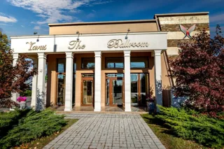
Fotografie a locației · Sursa fotografiei Ploiești · Hotel
Hotel Yarus
Hotel Yarus din Ploiești prezintă două saloane pentru nuntă, meniurile Gold Plus și Regal, parcare și camere pentru invitați. Vezi ce include fiecare ofertă.
str Republicii, nr 228, Cartier Albert, 100072 Ploiești+40 737 599 600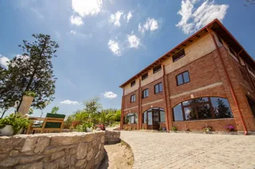
Fotografie a locației · Sursa fotografiei Vadu Săpat · Cramă
Crama de Piatra
Cramă cu restaurant, terasă și camere în Vadu Săpat, Prahova: degustări de vin lăudate, prețuri ușor ridicate. Ce să întrebați pentru nuntă.
Vadu Săpat 173, 107244 Vadu Săpat+40 729 278 945
Fotografie a locației · Sursa fotografiei Bușteni · Hotel
Vila Leonida
Vila Leonida, Bușteni. La Leonida, o viitoare mireasă și-a petrecut aici petrecerea burlăcițelor alături de prietene.
Strada Șoimului 10, 105500 Bușteni+40 758 018 480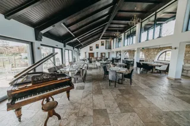
Fotografie a locației · Sursa fotografiei Gura Vadului · Cramă
Crama Apogeum
Cramă cu vinuri în amfore, restaurant și conac la Gura Vadului, Prahova. Nu sunt nunți documentate; meniu fix de 250 de lei sâmbăta.
Gura Vadului, 107300, 107302 Gura Vadului+40 771 801 890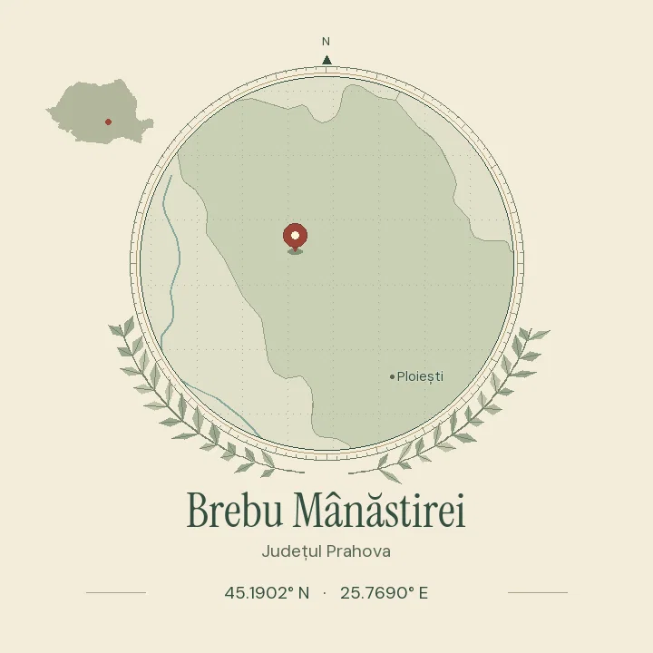
Hartă ilustrată Brebu Mânăstirei · Pensiune
Pensiunea Stefania
Pensiunea Stefania. Unul dintre oaspeții de la Ștefania descrie două locuri de grătar, unul lângă vilă și altul în pădure, plus un lac unde se putea pescui.
Str. Nicolae Breb Popescu 232, 107100 Brebu Mânăstirei+40 722 596 880
Hartă ilustrată Bușteni · Cazare în regim hotelier
BLUE CAT GARDEN RESIDENCE
Vilă în Poiana Țapului, Bușteni, cu terasă la marginea pădurii, foișor și grătar; 5 evaluări de nota maximă, fără nunți documentate.
Strada Zorilor 26, 105500 Bușteni+40 734 428 199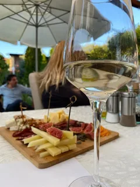
Fotografie a locației · Sursa fotografiei Valea Bobului · Cramă
1000 de chipuri winery
1000 de chipuri winery. Un cuplu care rezervase la 1000 de chipuri o noapte și o degustare povestește că a aflat la fața locului că se desfășura și o nuntă.
Valea Bobului+40 722 620 169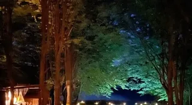
Fotografie a locației · Sursa fotografiei Comuna Valea Doftanei · Vilă
Luxury Lake House
Luxury Lake House. O vizitatoare care a sărbătorit aici aniversarea într-un weekend de glamping își amintește priveliștea, caiacul și piscina.
Calea Paltinului Nr. 2, 107640 Comuna Valea Doftanei+40 768 812 555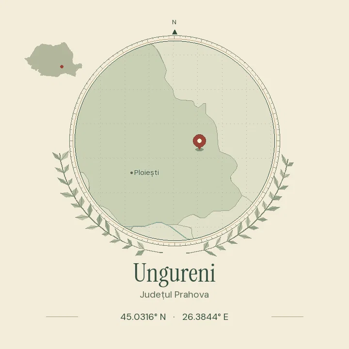
Hartă ilustrată Ungureni · Cramă
Crama Domeniile Edivine
Cramă boutique în Ungureni, Prahova, cu nota 5 din 4 evaluări și gazde lăudate. Fără date despre evenimente: ce să întrebi.
Str. Principala,nr.578,Ungureni, 107244 Prahova+40 730 102 426
Hartă ilustrată Bușteni · Hotel
YAEL LUXURY APARTMENTS 4
YAEL LUXURY APARTMENTS 4, prahova. Perioada sărbătorilor este particulară, dar detaliul vă ajută să formulați o întrebare concretă.
busteni, Str. Cumpătul, 105500 prahova+40 732 346 355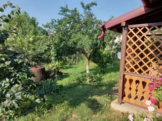
Fotografie a locației · Sursa fotografiei Urlați · Bed & Breakfast
Conacul de Vis
Casă de aproape 100 de ani renovată, pe un deal cu vii la Urlați, cu foișor și piscină. Doar 7 evaluări, toate din 2022.
Strada Valea Crângului 77, 106308 Urlați+40 740 394 611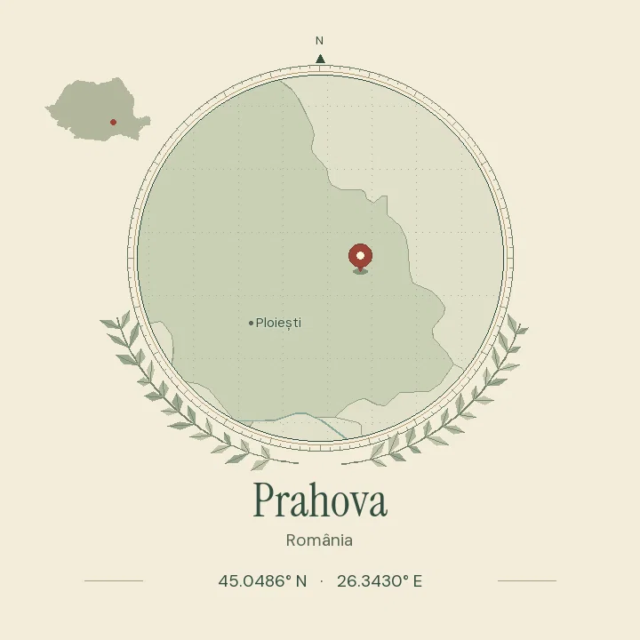
Hartă ilustrată Zona Fântânele · Podgorie
Dealu Mare - Malu Rosu
Dealu Mare - Malu Rosu. La Dealu Mare – Malu Roșu, vederea de sus arată o succesiune de parcele de vie, cu drumuri de pământ între rânduri.
DJ238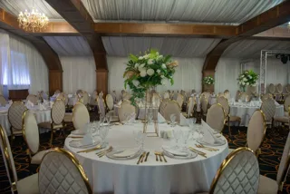
Fotografie a locației · Sursa fotografiei Boldești-Scăeni · Restaurant cu specific românesc
Casa Seciu
Fost conac pe deal la Boldești-Scăeni, cu cununie în grădină, piscină și cazare. Peste 3.000 de evaluări; zgomotul din camere, de verificat.
Strada Podgoriei, 105300 Boldești-Scăeni+40 244 210 360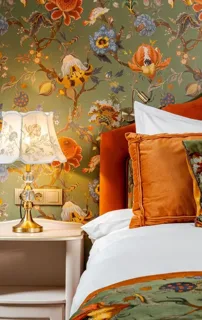
Fotografie a locației · Sursa fotografiei Chițorani · Hotel
Casa Timis
La Casa Timiș în Chițorani, terasa și pavilionul dintre vii au fiecare 30–60 de locuri. Comparați șase spații pentru nuntă, de la conac la salon.
Florica Romalo 4, 107112 Chițorani+40 723 682 568
Fotografie a locației · Sursa fotografiei Bușteni · Hotel
Conac Bavaria
Hotel cu restaurant bavarez la ieșirea din Bușteni spre Azuga: 60 de locuri în sală și 40 pe terasă. Ce laudă oaspeții și ce să verifici.
Bulevardul Libertății 211, 105500 Bușteni+40 752 112 636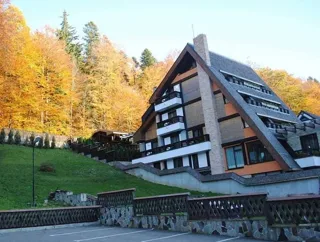
Fotografie a locației · Sursa fotografiei Bușteni · Bed & Breakfast
Casa Freya Busteni
Un sejur la Casa Freya, la trecerea dintre octombrie și noiembrie, oferă un reper pentru cuplurile care se gândesc la o nuntă de toamnă în Bușteni.
Strada Făgetului 31, 105500 Bușteni+40 727 855 061
Fotografie a locației · Sursa fotografiei Bușteni · Cazare
Cazare Busteni - Kalinderu
Apartamente în Bușteni cu vedere spre Castelul Cantacuzino, restaurant de 35 de locuri și grădină de vară pentru 20. Cazare între 250 și 350 de lei pe noapte.
Strada Fântânii, 105500 Bușteni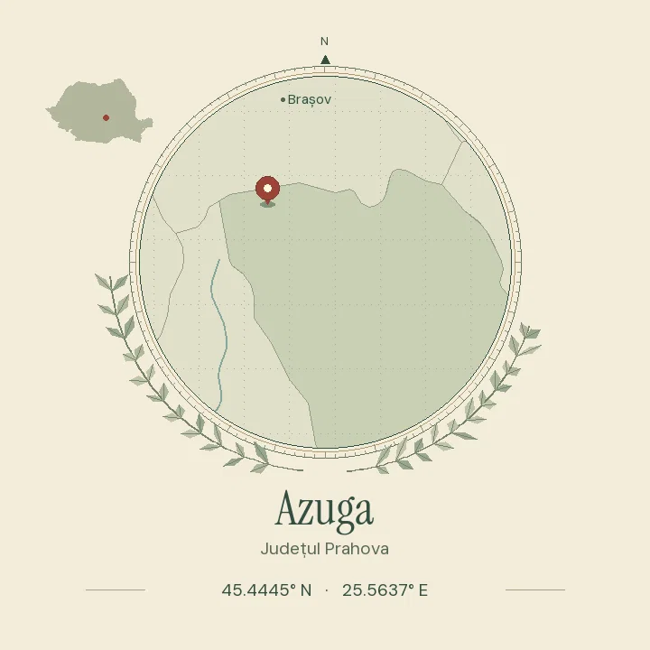
Hartă ilustrată Azuga
Cramele Prahova
Un grup de vizitatori la Cramele Prahova a coborât în pivnițe și a urmărit explicațiile ghidului despre obținerea vinului spumant.
Strada Independenței 24, 105100 Azuga+40 244 530 955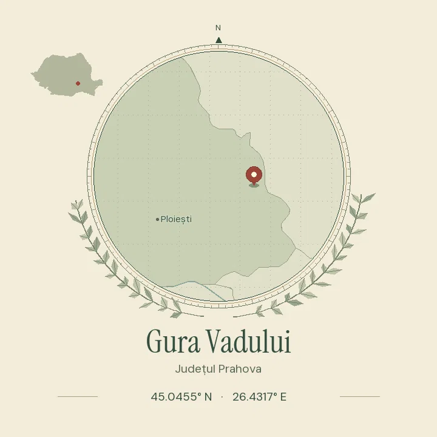
Hartă ilustrată Gura Vadului · Cramă
Oenoterra Dealu Mare
Un vizitator sosit sâmbătă la Oenoterra relatează că a aflat orele tururilor abia la fața locului și că s-a oprit în cele din urmă la magazinul de vinuri.
DJ100H, 107300 Gura Vadului+40 244 259 356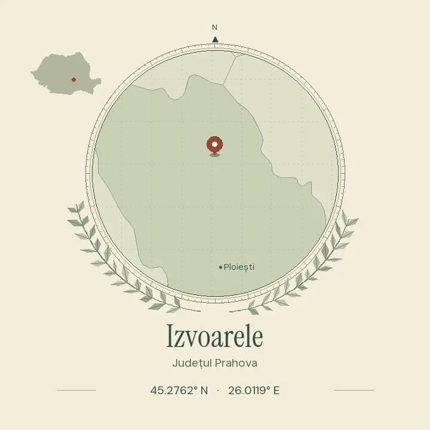
Hartă ilustrată Izvoarele · Bed & Breakfast
Pensiunea Amo
Pensiunea Amo, Izvoarele. Trandafirii urcați pe arcadele metalice dau curții de la Amo o axă în jurul căreia merită gândit decorul.
DN1A, 107320 Izvoarele+40 744 271 284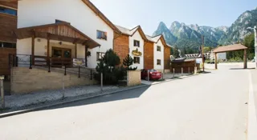
Fotografie a locației · Sursa fotografiei Bușteni · Vilă
Villa Ermitage Busteni
Villa Ermitage Busteni. Pentru Villa Ermitage, un oaspete cazat în 2026 descrie o ședere cu pensiune completă și apreciază mesele primite.
Strada Palanca 9e, 105500 Bușteni+40 723 139 344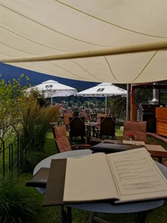
Fotografie a locației · Sursa fotografiei Bușteni · Restaurant
Restaurant La Cerdac
Restaurant La Cerdac. La Cerdac, un mesean descrie o oprire în Poiana Țapului cu bulz, saramură de păstrăv și carne la garniță cu mămăligă și hribi.
Strada Șoimului 11, 105500 Bușteni+40 751 189 801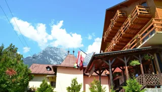
Fotografie a locației · Sursa fotografiei Bușteni · Pensiune
Casa Magică
Pensiune cu restaurant tradițional în Bușteni, cazare de la 180 de lei pe noapte. Laude pentru porții, critici pentru servire în zilele aglomerate.
Strada Valea Albă 44, 105500 Bușteni+40 745 207 680
Fotografie a locației · Sursa fotografiei Sinaia · Restaurant
KUIB Restaurant
KUIB Sinaia propune ceremonii în Parcul Piatra Șoimului, pe aproape 1.000 m², meniu personalizat cu degustare, bufet și candy bar de casă.
Strada Gârbovei 10C, 106100 Sinaia+40 735 189 107
Fotografie a locației · Sursa fotografiei Bușteni · Castel
Castelul Cantacuzino
Castel neoromânesc din Bușteni cu terasă spre Bucegi și Caraiman, 25.667 de evaluări. Nunțile nu sunt documentate; ce să întrebi pentru poze sau o cină.
Strada Zamorei 1, 105500 Bușteni+40 373 811 415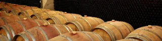
Fotografie a locației · Sursa fotografiei Urlați · Cramă
Crama Basilescu
Crama Basilescu, Urlați. O degustare în doi vă permite să alegeți ce ați dori servit familiei, înainte de a solicita o ofertă de grup.
DC152, Urlați+40 244 271 053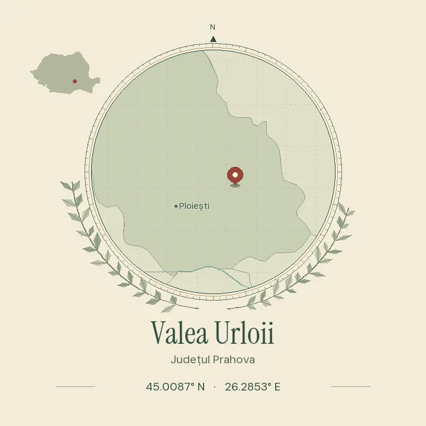
Hartă ilustrată Valea Urloii · Cramă
Domeniile Dealu Mare
Cramă în Valea Urloii, Prahova, cu alee printre vii și clădiri la poalele dealurilor. Nicio informație despre evenimente; ce să întrebi.
Valea Seman FN, 106315 Valea Urloii+40 737 672 122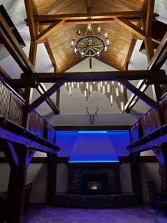
Fotografie a locației · Sursa fotografiei Sinaia · Hotel
Vila de Argint
Pentru cazare la Vila de Argint, un oaspete s-a declarat mulțumit de cameră și de poziție, dar a întâmpinat o problemă la instalația din baie.
Aleea Peleșului. 2, Domeniul Regal Peleș, 106100 Sinaia+40 748 090 823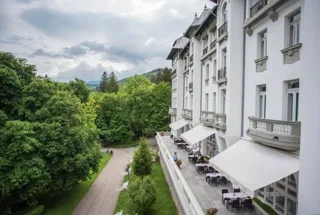
Fotografie a locației · Sursa fotografiei Sinaia · Restaurant
Restaurant Palace Sinaia
Un client care revenea la Restaurant Palace din Sinaia spune că într-o zi a găsit aici un eveniment în desfășurare și nu a știut imediat cui să se adreseze.
Strada Octavian Goga, 106100 Sinaia+40 743 928 872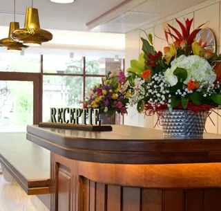
Fotografie a locației · Sursa fotografiei Sinaia · Hotel
Hotel Anda
Hotel pe Bulevardul Carol I din Sinaia, cu restaurant de 160 de locuri în sală și pe terasă. Renovat, cu spa; ce să întrebi pentru petrecere.
Bulevardul Carol I 30, 106100 Sinaia+40 244 306 020Fotografie a locației · Sursa fotografiei Sinaia · Restaurant
Crama Rina Restaurant Tradițional Sinaia
Restaurant tradițional pe Bulevardul Carol I din Sinaia, cunoscut pentru papanași și porții mari. Plusuri, minusuri și întrebări pentru grup.
Bulevardul Carol I 8, 106100 Sinaia+40 754 228 896
Fotografie a locației · Sursa fotografiei Bușteni · Restaurant cu specific francez
Restaurant Canta Cuisine
Restaurant Canta Cuisine. Cotletul de porc cu sos de gorgonzola și obrajii de vită sunt alegerile povestite de un client la Canta Cuisine.
Strada Zamorei, 105500 Bușteni+40 737 299 464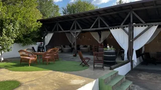
Fotografie a locației · Sursa fotografiei Urlați · Hotel
Conacul Dintre Vii
Han renovat de la finalul anilor 1800, printre viile de la Urlați, cu cramă și piscină; funcționează doar cu programare, nunțile nu sunt documentate.
Strada Valea Bobului 18, 106308 Urlați+40 744 756 543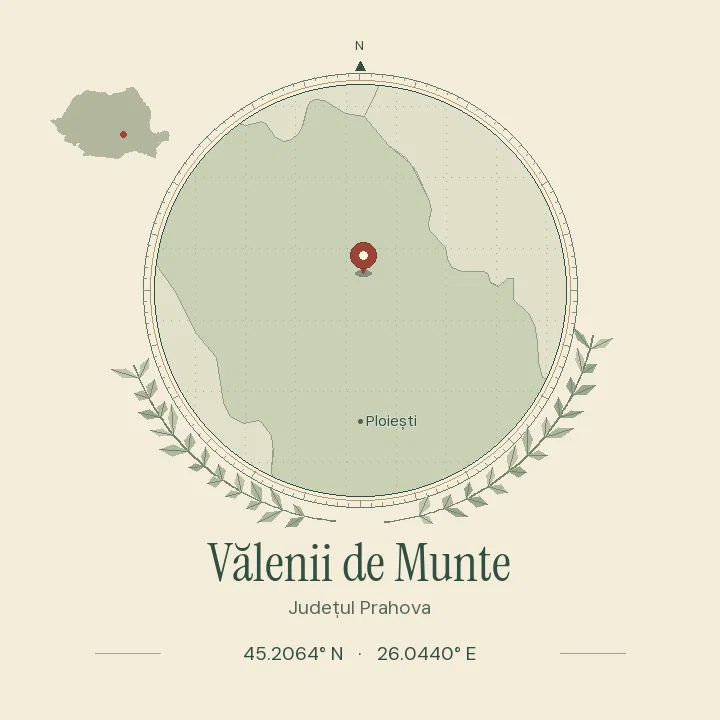
Hartă ilustrată Vălenii de Munte · Hotel
Pensiunea Dely Cios
O persoană care a venit de Florii cu un grup de pensionari își amintește că la Dely Cios s-au putut alege atât păstrăv, cât și cotlet cu garnitură.
Strada Ștefan cel Mare 22 C, 106400 Vălenii de Munte+40 742 056 758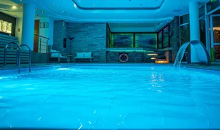
Fotografie a locației · Sursa fotografiei Sinaia · Hotel
Hotel Carpathia
Hotel cunoscut în centrul Sinaiei, cu spa și centru de conferințe, dar recenziile din 2026 semnalează probleme serioase de igienă și mâncare.
Bulevardul Carol I 46, 106100 Sinaia+40 741 224 765
Fotografie a locației · Sursa fotografiei Bușteni · Restaurant
Farfuria plină
Restaurant cu muzică live și pensiune în Bușteni, nota 4,1. Recenziile din 2026 semnalează mâncare reîncălzită; cere degustare și contract scris.
Bulevardul Libertății 220, 105500 Bușteni+40 771 106 906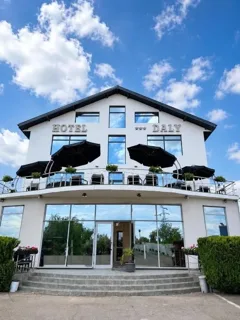
Fotografie a locației · Sursa fotografiei Bărcănești · Hotel
HOTEL DALY
HOTEL DALY, Bărcănești. La Daly, un oaspete vorbește despre ajutorul primit de la recepție și disponibilitatea angajaților.
107055 Bărcănești+40 733 581 416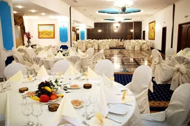
Fotografie a locației · Sursa fotografiei Ploiești · Hotel
Prahova Plaza
În Ploiești, un oaspete de la Prahova Plaza vorbește despre amplasarea centrală, camera potrivită pentru două persoane și micul dejun variat.
Strada Constantin Dobrogeanu Gherea 11, 100035 Ploiești+40 244 526 850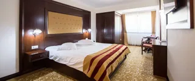
Fotografie a locației · Sursa fotografiei Bușteni · Hotel
Hotel Silva
Hotel Silva. Un oaspete care a revenit în mai multe sezoane spune că a cerut de fiecare dată o cameră orientată spre Crucea de pe Caraiman.
Strada Telecabinei 54a, 105500 Bușteni+40 244 321 412
Fotografie a locației · Sursa fotografiei Sinaia · Hotel
Hotel Palace
Hotel Palace, Sinaia. Un client de la Palace din Sinaia a fost surprins că accesul la piscină necesita o plată suplimentară.
Strada Octavian Goga 4, 106100 Sinaia+40 758 749 117
Fotografie a locației · Sursa fotografiei Sinaia · Restaurant
Restaurant Bucegi
Restaurant Bucegi, Sinaia. Crap cu mămăligă, mujdei și vin alb: aceasta a fost comanda unui client de la Bucegi, în Sinaia.
Bulevardul Carol I 22, 106100 Sinaia+40 244 312 217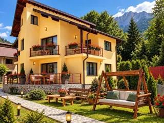
Fotografie a locației · Sursa fotografiei Poiana Țapului · Local pentru evenimente
Complex Mona Caraiman
Complex în Poiana Țapului cu restaurant, terasă, terenuri de sport și tabere pentru copii; păreri împărțite despre camere. Ce să verificați pentru nuntă.
Strada Piatra Arsă, 105500 Poiana Țapului+40 726 329 525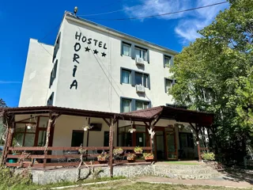
Fotografie a locației · Sursa fotografiei Plopeni · Hotel
Hotel Horia
Dacă ai invitați care trec frontiera pentru nuntă, întreabă la recepție în ce limbi pot primi indicații și dacă le poți trimite dinainte adresa scrisă exact.
Aleea Activ 1, 105900 Plopeni+40 747 316 030
Întrebări despre locațiile din județul Prahova
Unde pot dormi invitații în județul Prahova?
În registrul de cazare SITUR găsim Vila Doi Ponei - Cazare Busteni (40 de locuri de cazare), Suru Hotel (38 de locuri de cazare), Vila Portas (16 locuri de cazare). Verifică ce camere sunt libere pentru noaptea evenimentului.
Ce spații sunt documentate pentru evenimente în aer liber în județul Prahova?
Zaivan Retreat — Petrecere intimă în grădină. Casa Timis — Nuntă între vii. KUIB Restaurant — Ceremonie în aer liber.
Care locație din județul Prahova are cele mai multe evaluări Google?
Castelul Cantacuzino are 25.667 de evaluări în profilul Google folosit la documentare. Evaluările acoperă și alte experiențe la proprietate, inclusiv vizitele fără eveniment.
Unde apare o intrare accesibilă în județul Prahova?
Profilurile Google indică o intrare accesibilă la Crama Strămutată, Crama SERVE Ceptura, Events Garden by Nabucco. Pentru o cununie în exterior, cere detalii despre traseul dintre intrare și zona cu scaune.